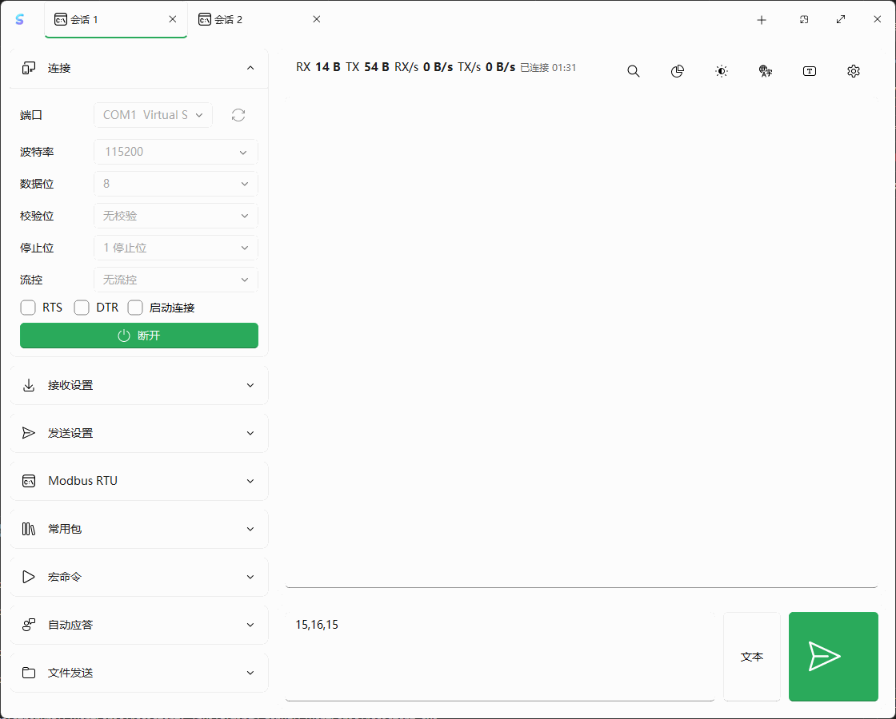
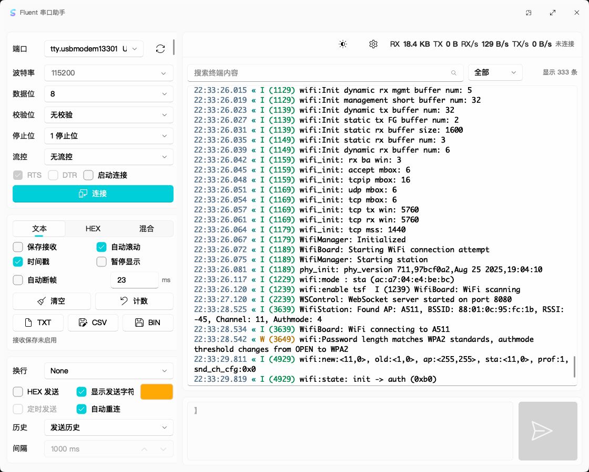

清晰的串口终端
独立配置收发编码，支持文本、HEX、混合显示、搜索过滤、时间戳、自动断帧与多标签会话。
跨平台 · 开源 · Fluent Design
一套专注日常效率的桌面串口工作台。看清每一帧数据，用高性能实时曲线追踪多通道变化，再用宏命令和脚本把重复测试交给软件。
下载信息来自 GitHub Releases，页面会自动检查最新稳定版。

看清数据文本、HEX、混合显示与自动断帧
组织流程常用包、协议模板、宏命令和自动应答
跨平台发布Windows、macOS 与 Linux 原生构建
不止是收发窗口
常用功能保持顺手，复杂能力按需展开。无论临时看日志，还是搭建可重复的设备测试，都不需要切换工具。
独立配置收发编码，支持文本、HEX、混合显示、搜索过滤、时间戳、自动断帧与多标签会话。
用协议模板拆解帧结构，内置 Modbus RTU 与常见 CRC、LRC、XOR、SUM8 计算及发送追加。
宏命令支持多步骤、等待响应、循环和失败中止；JavaScript 脚本可读取记录并控制发送。
从分隔值、键值对或 JSON 中提取多通道数字，以高性能实时曲线呈现并导出 CSV；也可逐帧排序和过滤。
常用包、发送历史、循环发送、自动应答和分块文件发送覆盖调试现场的高频操作。
自动日志支持 TXT、CSV、BIN 与滚动存储；会话参数、规则和测试配置可在下次启动时恢复。
真实软件界面
连接配置和接收选项留在左侧，搜索、统计与终端记录集中在主区域，发送输入始终触手可及。浅色、深色和系统主题均可切换。

最新稳定版 0.1.10
Inno Setup 安装包会请求管理员权限，并默认安装到 Windows 的 Program Files 目录。
打开 DMG，将 Fluent Serial Assistant 拖入“应用程序”文件夹。
适用于 x64 或 64 位 ARM 的 Debian、Ubuntu 及其衍生发行版，可使用 APT 安装。
下载按钮直接连接 GitHub Release 附件，每个平台包均提供 SHA-256 校验文件。Windows Authenticode 开源签名正在申请中，当前安装包暂未签名。 English README 签名政策 查看源代码